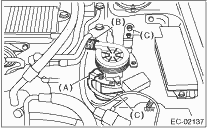
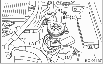

1. Disconnect the ground cable from the battery.

2. Disconnect the connector (A) from secondary air pump.
3. Disconnect the hose (B) from secondary air pump.
4. Remove the bolt (C) which secures the secondary air pump to the body.

EMISSION CONTROL (AUX. EMISSION CONTROL DEVICES)(H4DO) > Secondary Air Pump
1. Disconnect the ground cable from the battery.
2. Disconnect the connector (A) from secondary air pump.
3. Disconnect the hose (B) from secondary air pump.
4. Remove the bolt (C) which secures the secondary air pump to the body.
